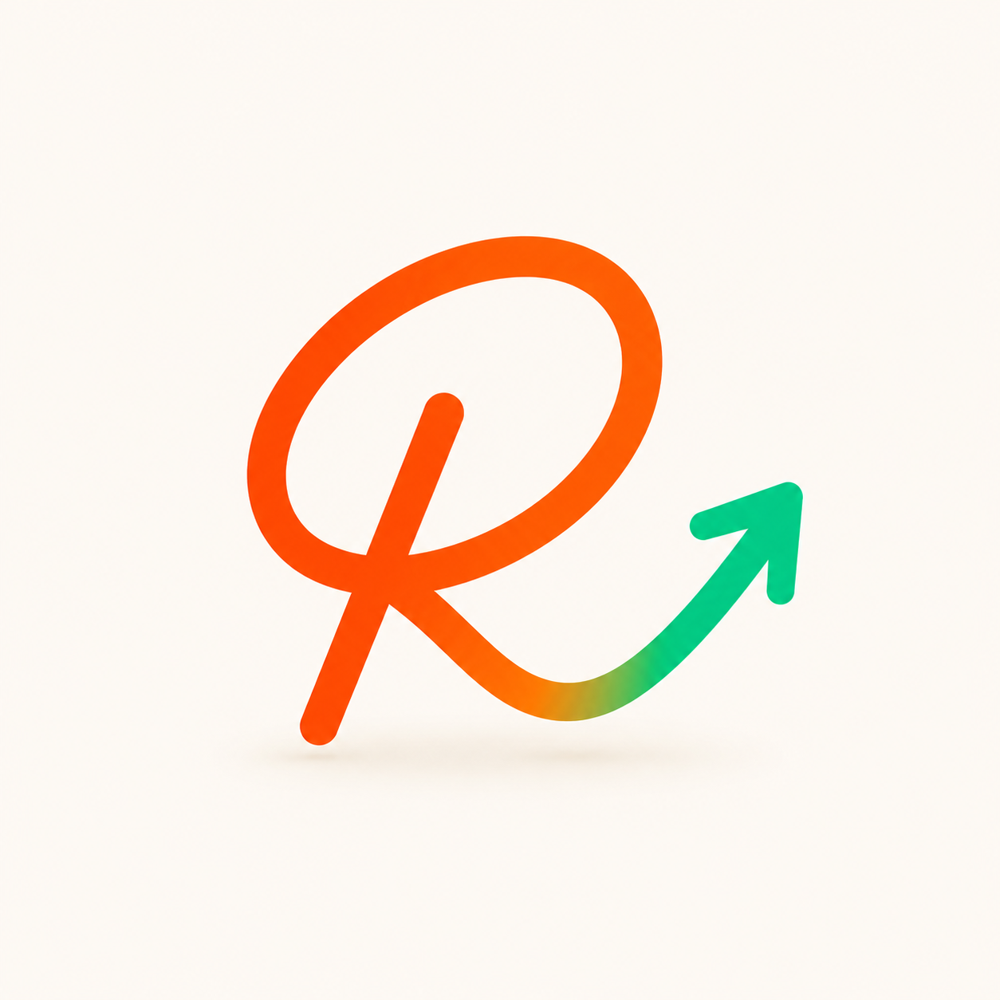

连笔 R · 深色霓虹
橙→绿一笔甩成上涨箭头。优雅，但记忆点偏弱、缺一个“一眼记住”的角色。

连笔 R · 暖白
同一字形的浅底版。干净、成熟，但同样偏“抽象符号”。
同一画布里横向对比所有方案。右上角可一键切换深色 / 浅色背景。前两张是你已认可的「连笔 R」实拍图，其余是新的吉祥物方向（矢量草图，定方向后再去 GPT 出精修大图）。
橙→绿一笔甩成上涨箭头。优雅，但记忆点偏弱、缺一个“一眼记住”的角色。

同一字形的浅底版。干净、成熟，但同样偏“抽象符号”。
橙色小牛，牛角=两支绿色上涨箭头。牛市符号全球秒懂，又萌又专业，缩成小图标也清晰。
钩子：牛 = 涨 + 角即箭头原创圆润角色（非 Snoo）骑着绿色箭头往上冲，天线顶着信号点。最有 Reddit 社区 / 散户文化味。
钩子：to the moon 的上冲感把品牌名 Alpha 视觉化：肚子上印希腊字母 α，头顶绿色上涨天线。直接绑定“超额收益”含义。
钩子：α = 跑赢大盘保留你已认可的 R，加两只眼睛 + 绿色箭头“角”，把字母变成一个小角色。熟悉感 + 新记忆点二合一。
钩子：字母拟人化A 的图标化：橙色圆角方块 + 白色牛头 + 绿箭头角。最适合做 favicon / X 头像 / App 图标。
钩子：落地小尺寸A 的另一种构图：牛头偏左，身后甩出一条绿色上涨曲线。更有“图标+动势”的故事感。
钩子：牛 + 行情线